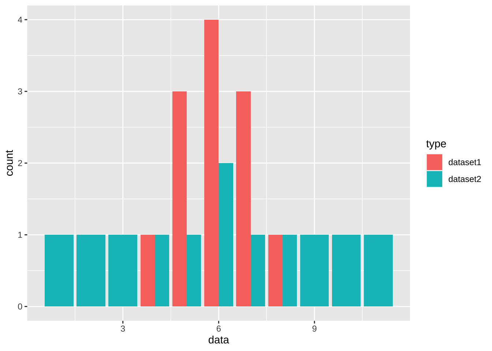
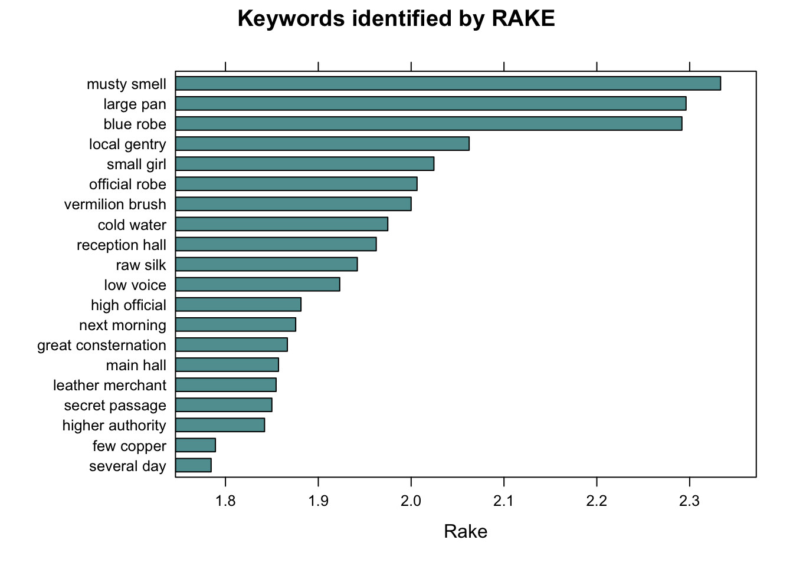
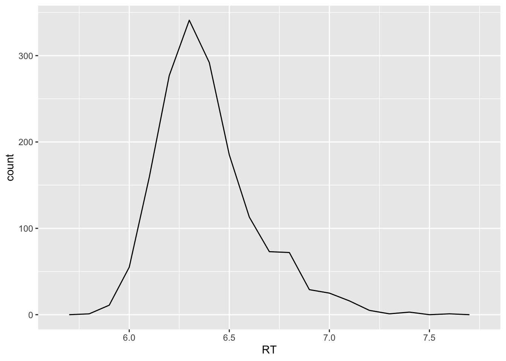
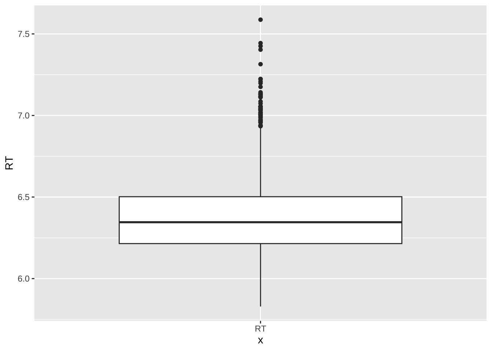
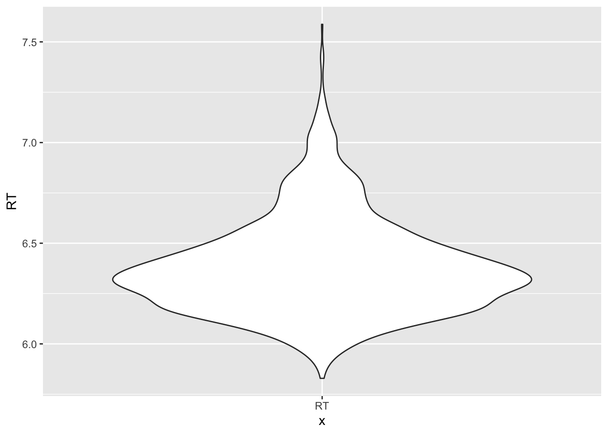
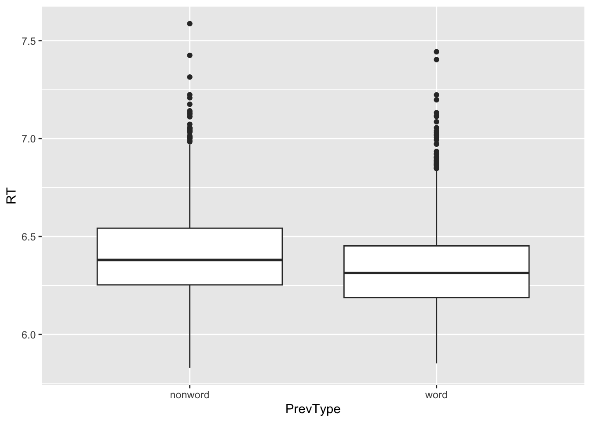
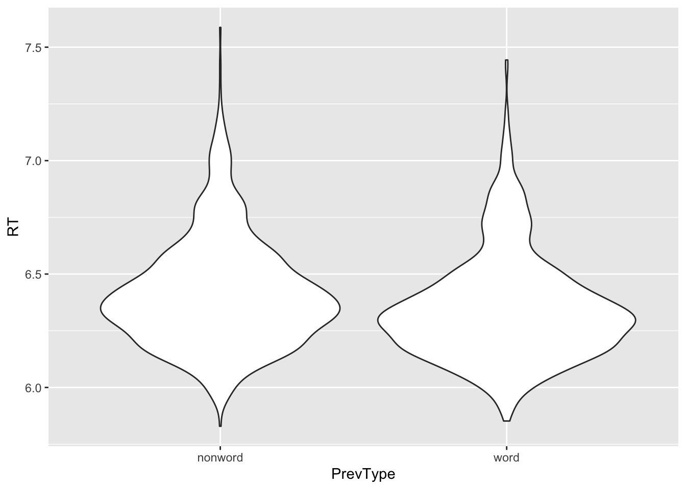
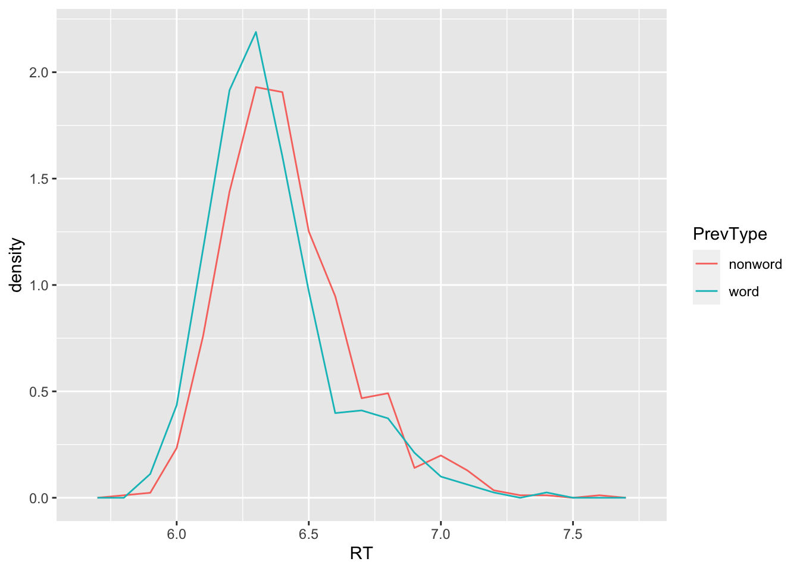

Chapter 4 第四章 探索性数据分析
探索性数据分析（Exploratory Data Analysis，简称EDA）通过可视化和统计手段来帮助人们理解数据中的模式和特征，发现数据中隐藏的关联性和趋势，为进一步的数据建模和分析提供基础。这种分析过程可以帮助数据科学家针对数据和应用的场景，提出假设或问题。
探索性数据分析过程中会不断反复经历以下几个环节：
数据转换：对数据集中的数值变量进行变换、重构以及描述性统计值计算。
数据可视化：通过绘制条形图、直方图、散点图、箱线图、密度图等，将数据可视化，更好地展示数据的趋中性和分布。
数据建模：通过统计模型验证数据之间的关系。
4.4 课堂任务
4.4.1 任务4.1 数据标准化与归一化
- 计算每个词汇的情感得分与抽象度的乘积作为新特征Emotion_Abstractness_Product。
- 计算每个词汇的词频与意象度的差作为新特征Frequency_Imagery_Difference。
- 对词频特征进行Z-score标准化，并创建新特征Frequency_Zscore。
- 对词汇抽象度进行Min-Max归一化，并创建新特征Abstractness_Normalized
- 对词频特征进行对数化，并创建新特征Frequency_Log。
library(tidyverse)
# 创建含有真实汉语词汇的数据集
set.seed(123) # 设置随机种子以确保可重复性
df_vocabulary <- data.frame(Word = c("苹果", "梨子", "香蕉", "草莓",
"桃子", "西瓜", "橙子", "柚子", "葡萄", "芒果",
"书", "笔", "课本", "教室", "黑板",
"学生", "老师", "考试", "作业", "校园",
"美食", "旅游", "音乐", "电影",
"运动", "阅读", "绘画", "写作", "摄影", "游戏",
"猫", "狗", "兔子", "鱼", "鸟",
"大象", "狮子", "熊猫", "猴子", "蛇",
"早晨", "中午", "下午", "晚上",
"春天", "夏天", "秋天", "冬天", "天气", "季节",
"篮球", "足球", "乒乓球", "网球",
"羽毛球", "游泳", "滑雪", "跑步", "健身", "瑜伽"),
Frequency = sample(1:1000, 60, replace = TRUE),
Abstractness = sample(1:5, 60, replace = TRUE),
Imagery = sample(1:5, 60, replace = TRUE),
Age_of_Acquisition = sample(3:12, 60, replace = TRUE),
Difficulty = sample(1:5, 60, replace = TRUE),
Emotion_Score = sample(1:5, 60, replace = TRUE))
# 使用mutate函数创建新特征
df_vocabulary %>%
mutate(Emotion_Abstractness_Product = Emotion_Score * Abstractness,
Frequency_Imagery_Difference = Frequency - Imagery,
Frequency_Zscore = scale(Frequency),
Abstractness_Normalized = (Abstractness - min(Abstractness)) / (max(Abstractness) - min(Abstractness)),
Frequency_Log = log(Frequency))4.4.2 任务4.2 描述性统计
计算男女生各门成绩的均分和标准差
df.score = data.frame(Student_ID = 1:100,
Listening_Score = sample(-5:100, 100, replace = TRUE),
Speaking_Score = sample(0:999, 100, replace = TRUE),
Reading_Score = sample(0:105, 100, replace = TRUE),
Writing_Score = sample(0:100, 100, replace = TRUE),
Gender = sample(c("Male", "Female"), 100, replace = TRUE))
# 计算每种母语的学习者的平均学习时长
df.mean.sd <- df.score %>%
filter(Listening_Score > 0 | Reading_Score < 100)%>%
group_by(Gender) %>%
summarise(Listening.mean = mean(Listening_Score),
Listening.sd = sd(Listening_Score))4.4.3 任务4.3 单变量可视化
4.4.3.1 单一分类变量
#用于数据
library(janeaustenr)
#用于分词
library(tidytext)
library(dplyr)
library(stringr)
austen.emma.word <- austen_books() %>%
group_by(book) %>%
mutate(linenumber = row_number(),
chapter = cumsum(str_detect(text,
regex("^chapter [\\divxlc]",
ignore_case = TRUE)))) %>%
unnest_tokens(word, text)%>%
count(word, sort = TRUE) %>%
#筛选Emma这个小说
filter(book == "Emma")%>%
#显示前20个高频词
head(20)4.4.3.2 单一连续变量
# `languageR` 包中包含了多个数据集，供用户在语言学研究和数据分析中使用。其中`lexdec`:包含了英语词汇决策任务的数据，用于研究词汇的判断和决策过程。
library(languageR)
data("lexdec")
ggplot(lexdec, aes(x="RT", y=RT))+
geom_boxplot()



4.4.4 任务4.4 双变量可视化
4.4.4.2 类别变量+连续变量
#bar plot
lexdec%>%
group_by(PrevType)%>%
summarise(mean = mean(RT))%>%
ggplot(aes(PrevType, mean))+
geom_bar(stat="identity")
lexdec%>%
group_by(PrevType)%>%
summarise(mean = mean(RT),
sd = sd(RT))%>%
ggplot(aes(PrevType, mean, fill = PrevType))+
geom_bar(stat="identity")+
geom_errorbar(aes(ymin = mean - sd,
ymax = mean + sd),
width = .2, size = 0.7, position = position_dodge(.9))


# 密度图
ggplot(lexdec, aes(x = RT, y = ..density..))+
geom_freqpoly(aes(color = PrevType), binwidth = 0.1)